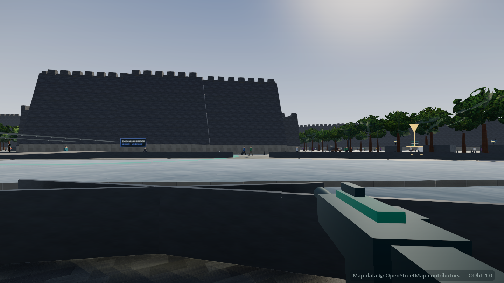
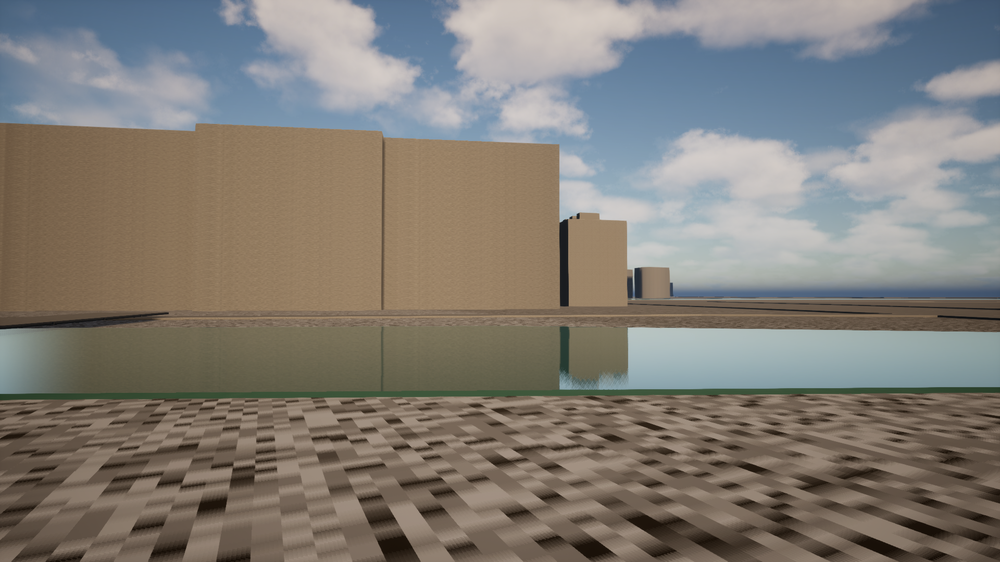
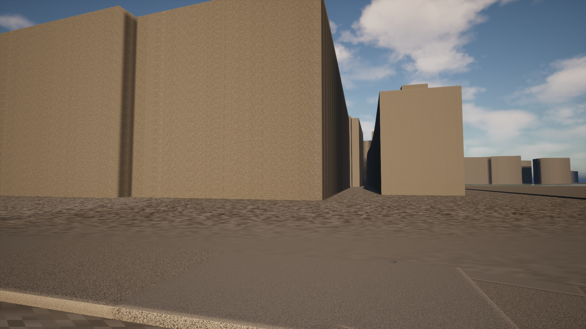
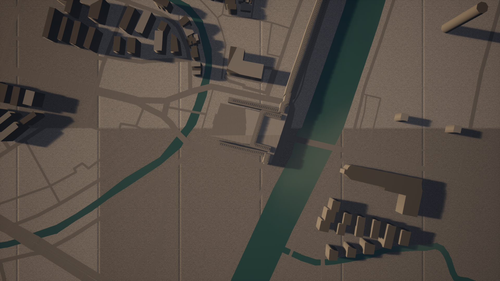

这是一个跨模型 AI 协作实验的产物:以南京中华门—秦淮河片区的真实测绘数据 (OpenStreetMap,384 栋建筑、195 条道路、明城墙环线)为底,在 Unreal Engine 5.8 中重建的第一人称训练演习原型。对抗目标只有训练无人机——不描绘任何针对人的暴力; 这座城市与它的历史被认真对待。
当前状态:游戏已可通过 Pixel Streaming 在浏览器中游玩(本地已验证:
行走、视角、碰撞、材质全部工作)。公网入口等待流媒体主机决策后开放——届时下方按钮将变为可点击。
进入演习(即将开放)
从 2.5 分到重建 · The rebuild
此前的网页版(Three.js)被独立评审团以 AAA 标准评为 2.5–3/10 后,项目按用户决定 迁移至 Unreal Engine 5.8。下面是同一视点的对比与当前状态。




诚实的清单 · Honest ledger
视觉质量仍是坯体阶段(评审团的整改清单尚未全部完成);无人机与五目标任务已作为数据移植、 尚未接入玩法;公网部署等待主机决策。每一步都有渲染帧或日志为证,全部记录在版本库中。